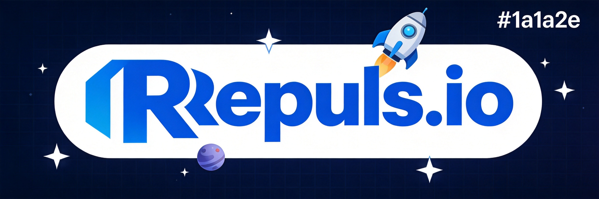
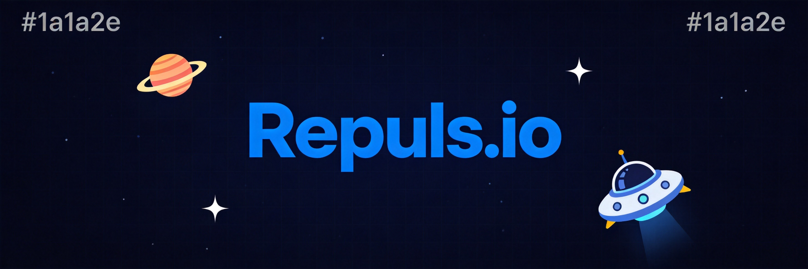
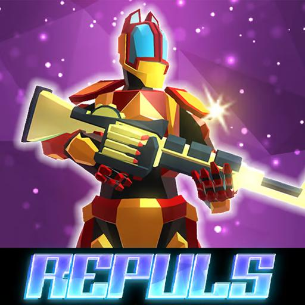
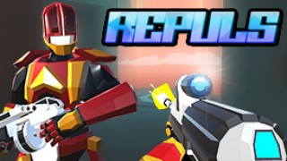

Repuls.io brings fast-paced arena shooter action to the io game space. With unique movement mechanics including ground repulsion, this FPS demands quick reflexes and smart positioning. This guide covers everything you need to go from newcomer to fragging machine in the arena.
🎮 Game Basics

Repuls.io is an arena-style first-person shooter with a unique twist—the repulsion launcher. This gadget lets you launch yourself around the arena while also dealing damage to enemies. The combination of traditional FPS combat with mobility mechanics creates a high-skill-ceiling gameplay experience that keeps me coming back.
Game Modes
- Team Deathmatch - Two teams compete for the highest kill count
- Free for All - Everyone fights everyone
- Capture the Flag - Team-based objective mode
Key Feature: Repulsion Launcher
The repulsion launcher is what makes Repuls.io unique. It can be used to propel yourself across the map, making you a harder target, or fired at enemies to push them away and deal damage. Mastering this tool is essential for competitive play.
⚡ Movement Mechanics
Movement in Repuls.io isn't just about running—it's about using the repulsion launcher to gain tactical advantages. After hundreds of hours in this game, I can tell you that movement is arguably more important than aim.
Repulsion Jumping
Fire the repulsion launcher at the ground while jumping to amplify your jump height and distance. This technique is essential for reaching otherwise inaccessible areas and creating unpredictable movement patterns. I spent my first week just practicing this and it's still the foundation of my gameplay.
Air Control
Unlike traditional FPS games, Repuls.io offers significant air control. You can adjust your trajectory mid-flight, allowing for complex maneuvers and last-second dodge adjustments.
Combine repulsion jumping with weapon fire. Fire your gun while airborne to catch opponents off-guard. Most players expect you to land before engaging.
Recovery Techniques
After using repulsion, you're briefly vulnerable. Practice quick recovery movements—immediately landing in a defensible position after propelling yourself.
🔫 Weapon Guide

Assault Rifle
The balanced choice. Good accuracy, decent damage, and manageable recoil make this weapon effective at most ranges. I'd suggest mastering this first before experimenting with other weapons—it's what I still use in clutch situations.
Shotgun
Devastating at close range but useless at distance. Use repulsion to close gaps quickly, then unleash destruction at point-blank range. The tradeoff is extreme vulnerability if you fail to close the distance.
Sniper Rifle
High damage, slow fire rate. Requires patience and prediction. Sniper play in Repuls.io is challenging because of the mobility—enemies can be anywhere by the time your second shot is ready.
🗺️ Map Control

High Ground Advantage
In Repuls.io, high ground provides better sightlines and easier escape options. Use repulsion to access elevated positions quickly, then hold them as long as you can.
Chokepoint Control
Control chokepoints to dictate engagements. If enemies must pass through a narrow area, you control when and how fights begin. Position yourself to deny these areas.
Flanking Routes
The repulsion launcher enables unique flanking options. Find routes that let you appear behind enemy lines unexpectedly. Surprise attacks from unexpected angles often end fights before they truly begin.
⚔️ Combat Tactics

Dueling
In one-on-one fights, movement beats aim more often than not. Use repulsion to make yourself a difficult target while landing shots. Strafing in traditional FPS works, but repulsion mobility is your edge.
Third-Person Awareness
Watch your minimap constantly. Awareness of surrounding threats prevents you from being caught in bad positions. The best fights are the ones you choose, not the ones you're forced into.
Repulsion as a Weapon
p> Don't just use repulsion for mobility—use it offensively. Fire at enemies to push them off ledges, into hazards, or away from their cover. The damage isn't massive, but the positioning disruption is invaluable.🏆 Pro Tips

1. Master the Repulsion Arc
Practice launching yourself to specific locations. Precision repulsion lets you escape dangerous situations and pursue kills effectively.
2. Don't Spam Repulsion
The launcher has cooldowns. Wasting repulsion on unnecessary movement leaves you vulnerable when you actually need it.
3. Lead Your Shots
Mobile targets are common. Predict where opponents will be, not where they are. This is especially important with slower weapons like the sniper.
In team modes, your repulsion mobility makes you an excellent flanker. While teammates engage from the front, use your mobility to appear behind enemy lines.
❓ Frequently Asked Questions
What's the best weapon for beginners?
The assault rifle offers the most forgiving learning curve. Its balanced stats let you focus on movement and positioning rather than compensating for extreme weapon weaknesses.
How do I improve my repulsion accuracy?
Practice in empty servers or custom games. Focus on ground placement for jumps and direct hits for combat. The launcher has travel time—aim slightly ahead of moving targets.
What's the best strategy against sniper players?
Use repulsion to move unpredictably and close distance quickly. Snipers thrive against predictable targets. Once you're close, their slow fire rate becomes a fatal weakness.
How do I counter aggressive shotgun users?
Maintain distance and use the environment for cover. Shotgun users need to close distance—deny them that. Your ranged weapons should keep them retreating.
Is repulsion jumping difficult to learn?
It takes some practice but isn't overly complex. Start with simple vertical boosts, then progress to directional jumps. Within a few hours of play, it should feel natural.
📝 Conclusion
Repuls.io rewards aggressive, mobile playstyles combined with solid aim. The unique repulsion mechanic separates it from traditional FPS games and creates exciting, fast-paced matches. After playing for a while, you'll notice that the best players aren't necessarily the ones with the best aim—they're the ones who move smart.
Looking for more FPS action? Check out our Krunker.io guide or Venge.io guide for similar competitive shooters.
Last updated: January 31, 2024
Written by the iogameguide.com team